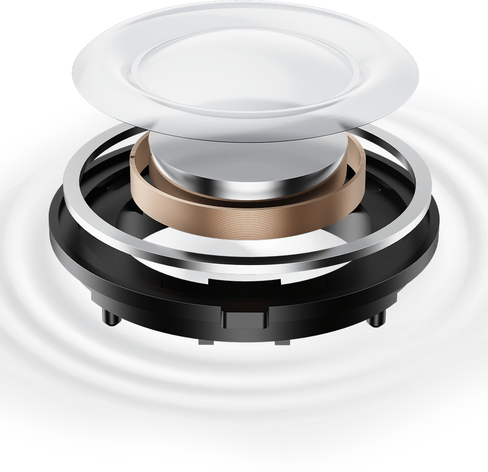
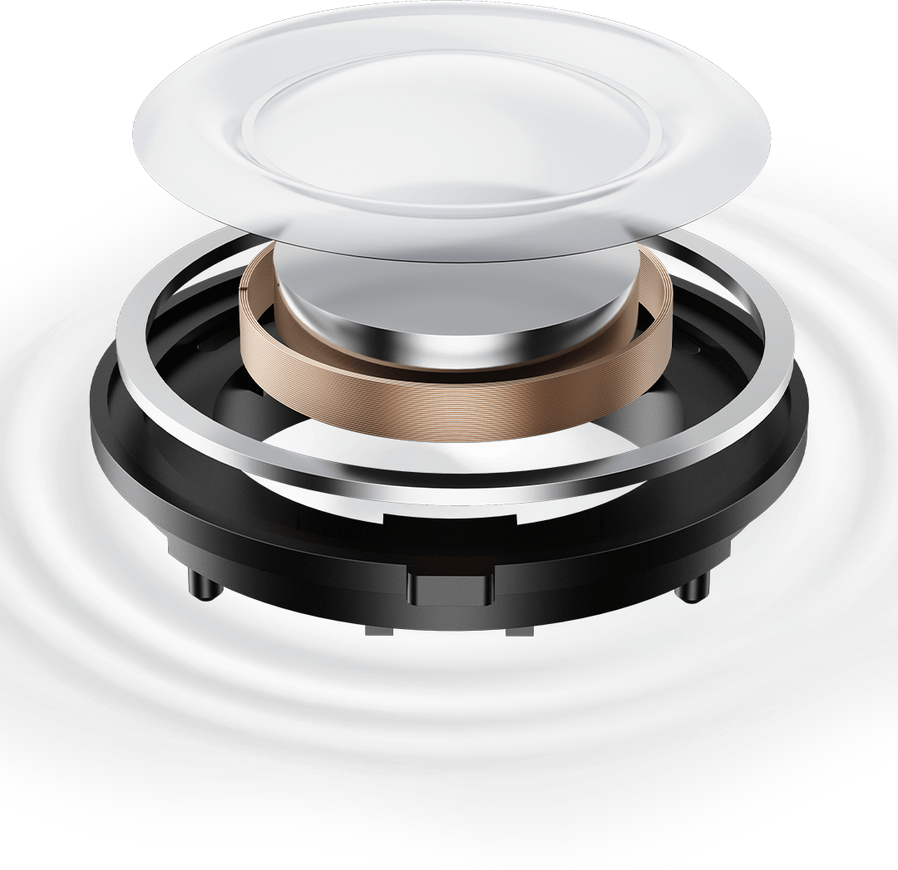
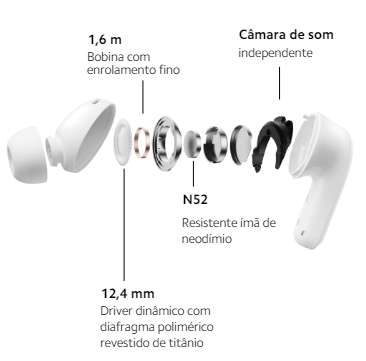

Redmi Buds 5
Nada além do seu ritmo
Cancelamento de ruído extraordinário
Cancelamento de ruído ativo poderoso de até 46 dB
Desligue-se do mundo e ligue-se no seu ritmo
Com uma profundidade de redução de ruído de até 46 dB*, o Redmi Buds 5 reduz eficazmente o ruído de baixa frequência, como em uma cabine de avião ou no metrô. Coloque os fones no ouvido e curta seu espaço pessoal.

Três modos de cancelamento de ruído
Soluções personalizadas para diferentes situações


Três modos de transparência
Ouça o mundo ao seu redor
Fique atento ao que está acontecendo ao seu redor enquanto aprecia sua música com três modos de transparência.
Cancelamento de ruído com dois microfones baseado em IA para chamadas*
Continue correndo, sem medo do ruído do vento
Com a inteligência artificial Xiaomi, o Redmi Buds 5 pode resistir a ruídos gerados por ventos de 6 m/s*. Os dois microfones trabalham juntos para extrair com eficiência os sons vocais com precisão e filtrar o ruído externo; é como se você estivesse falando com a pessoa cara a cara.

O que há de melhor em som Hi-Fi
Ouça todos os detalhes
Driver ultragrande com diafragma de titânio
Sinta-se como se estivesse ouvindo o som ao vivo
O grande driver dinâmico de 12,4 mm cria uma área de vibração maior e gera batidas mais profundas, enquanto o resistente diafragma revestido de titânio proporciona um desempenho de agudos mais puro. Ouça o rangido das cordas e as respirações entre frases com a acústica profissional que dá vida à música.
 

Câmara de som independente
Para um palco sonoro amplo
Ao garantir excelente resposta de frequência dinâmica e consistência sonora, a câmara de som independente do Redmi Buds 5 cria uma experiência mais realista e imersiva com camadas distintas de sons de alta, média e baixa frequência.
Balanço de áudio
Ajuste facilmente com quatro configurações de EQ para chegar ao som que você deseja.
Experiência de uso incrível
Confortável em todos os aspectos
Design clássico de fones de ouvido para oferecer um ajuste firme
Um novo toque no design clássico. Otimizado com o uso de modelagem de dados de milhares de modelos de canais auditivos, o Redmi Buds 5 combina ajuste estável com conforto. Com uma distribuição de peso interna e externa de 65:35, o Redmi Buds 5 oferece o melhor ajuste ao seu ouvido.
Iluminação LED suave
Estojo natural e delicado
O estojo de carregamento Redmi Buds 5 apresenta um design delicado e compacto. As luzes LED no estojo são compostas por cinco pequenas esferas que emitem luz suave e natural. As faixas decorativas e brilhantes com nano revestimento dão um toque de elegância ao Redmi Buds 5.
Até 10 horas de uso
Curta músicas sem interrupções
Até 10 horas de bateria, com o uso do estojo de carregamento, a autonomia da bateria pode chegar a até 40 horas* e manter os fones funcionando por todo o tempo que você precisar deles. Com o carregamento rápido, os fones podem reproduzir até duas horas de música após uma carga rápida de apenas cinco minutos*.
ANC desligado
Sem estojo de carregamento:
até 10h
Com estojo de carregamento:
até 40h
Google Fast Pair
Abra a tampa para a pop-up aparecer e simplesmente toque para conectar
Com apenas um toque, o Redmi Buds 5 permite o emparelhamento Bluetooth rápido e sem esforço com seus dispositivos Android*. Você pode até mesmo verificar onde o deixou pela última vez.
Personalize facilmente seus fones de ouvido
Faça o download do aplicativo Xiaomi Earbuds para ajustar as configurações de cancelamento de ruído e controle de toque dos seus fones de ouvido sem fio Redmi Buds 5. Você está no controle: ajuste as configurações para obter um áudio ideal e instale atualizações de firmware on-line. Há ainda mais recursos para você descobrir.

Atenção em todos os detalhes
Conectividade inteligente para dois dispositivos simultaneamente*
Bluetooth® 5.3*
Controle por toque*
Avisos legais:
*As imagens desta página são meramente ilustrativas e podem não ser uma representação exata do produto. Os parâmetros do produto são apenas para referência. Alguns parâmetros do produto podem variar devido a fatores externos, como ambiente e diferenças do sistema de smartphone. Consulte o produto real para obter detalhes.
*Os dados de teste de cancelamento de ruído são fornecidos pelo Instituto Nacional de Metrologia da China. O produto atinge 46 dB de profundidade do ANC somente em determinada faixa de frequência. Os resultados reais podem variar de acordo com as condições de uso. Tocar e segurar qualquer um dos fones de ouvido só permite alternar entre os modos ANC e de transparência, por padrão. Configurações de ANC e do modo de transparência disponíveis somente no aplicativo Xiaomi Earbuds.
*O teste de cancelamento de ruído (em relação a ≤6 m/s) foi realizado pelo Instituto Nacional de Metrologia da China. Nº do relatório LSsx2023 -09838.
*Condições de teste de vida útil da bateria e carregamento rápido: Dados de teste de 10 horas com base no Redmi Note 13 Pro 5G (MIUI 14.0.23), dados de teste de 40 horas com base no Xiaomi 12X (MIUI 14.0.4), fones de ouvido versão V3.0.3.7. O nível da bateria dos fones de ouvido estava em 100%, e o volume dos fones de ouvido foi ajustado para 50%. Foi usado o modo de codificação Bluetooth AAC com o recurso ANC, o modo de transparência e a conectividade de dispositivo duplo estavam desligados. Conteúdo do teste: Descarregue totalmente a bateria do Redmi Buds 5 ao reproduzir áudio até que um dos fones de ouvido pare de tocar. Verifique se a porta de carregamento está livre de líquidos e objetos estranhos antes de carregar. Os dados de carregamento e autonomia da bateria dos fones de ouvido derivam dos testes internos realizados pelo fabricante. Os resultados reais podem variar dependendo das atualizações de firmware, das condições de uso, do nível de carregamento e dos fatores ambientais.
*O carregamento rápido de cinco minutos exige que a bateria do estojo de carregamento esteja em 20% ou mais.
*Os usuários do Android 6.0 ou posterior podem acessar este aplicativo no Google Play. Os usuários do iOS 14.0 ou posterior podem acessar este aplicativo na iOS App Store.
*Em todos os dispositivos Android compatíveis que executam o Google Play Services 11.7 ou mais recente, com compatibilidade com o Marshmallow (Android 6.0).
*O Google Fast Pair será desativado por cinco minutos se for cancelado consecutivamente três vezes. Se estiver desativado, aguarde cinco minutos para tentar emparelhar por meio do Google Fast Pair.
*A conectividade de dispositivo duplo está desativada como padrão, a experiência pode variar dependendo do dispositivo. Faça o download do aplicativo Xiaomi Earbuds para ligar. Os aplicativos de terceiros são necessários para oferecer suporte a pausa síncrona ou a continuar ao atender ou encerrar chamadas telefônicas. O nome do recurso pode ser diferente das configurações reais. Para aproveitar a opção de usar dois dispositivos, ative a função usando o aplicativo Xiaomi Earbuds somente em um dispositivo e conecte o segundo dispositivo via Bluetooth.
*Teste de resistência à água e poeira IP54. O produto foi aprovado no teste de Classificação de proteção de gabinete IED60529-2013 (código IP) realizado pelo Dongguan Nore Testing Center Co., Ltd. Os números de relatório de teste IP54 são NTC2309222SV00 e NTC2309224SV00. O resultado do teste mostrou que o produto está em conformidade com a norma IED60529-2013. A classificação IP54 se aplica aos fones de ouvido, não ao estojo de carregamento. Não use seus fones de ouvido em águas quentes. Seus fones de ouvido não podem ser usados durante o banho de imersão ou de chuveiro. Tente evitar usar os fones durante exercícios extenuantes. O suor durante exercícios pode causar danos ao dispositivo. Este produto é à prova de respingos, à prova d’água e à prova de poeira no momento da compra. No entanto, essas propriedades não são permanentes e podem diminuir com o passar do tempo com o desgaste diário. Sua garantia não cobre danos causados ao seu dispositivo por imersão em líquidos.
*A marca e os logotipos Bluetooth® são marcas registradas de propriedade da Bluetooth SIG, Inc. e qualquer uso dessas marcas pela Xiaomi Inc. é feito sob licença. Outras marcas e nomes comerciais pertencem a seus respectivos proprietários.
*As configurações de gestos e a detecção intra-auricular estão disponíveis apenas no aplicativo Xiaomi Earbuds.